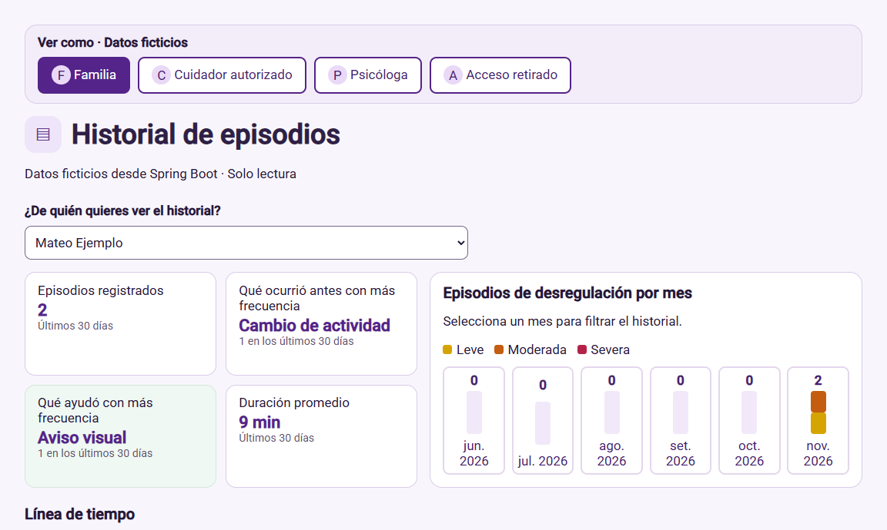

✳
Guías para acompañar
Pautas personalizadas y fáciles de consultar para que cada cuidador conozca cómo apoyar al niño.
COORDINACIÓN DEL CUIDADO
Kinemo reúne a familias, cuidadores y psicólogos para coordinar el apoyo durante episodios de desregulación y dar seguimiento a lo que ayudó.
Demo pública con datos ficticios y de solo lectura.

EL APOYO, EN UN SOLO LUGAR
Quienes acompañan al niño pueden compartir qué pasó, consultar las pautas y reconocer qué apoyos le resultaron útiles.
Pautas personalizadas y fáciles de consultar para que cada cuidador conozca cómo apoyar al niño.
Actividades con apoyos visuales para organizar el día y anticipar lo que viene.
Registra una alerta de cuidado y vincula lo ocurrido al historial para que la red autorizada pueda darle seguimiento.
ASÍ ESTÁ PENSADO KINEMO
Registra una alerta de cuidado para que la red autorizada pueda consultar la situación.
Documenta el episodio, qué pasó antes y qué apoyos ayudaron.
El profesional puede revisar el episodio y dejar un comentario para la familia.
CADA PERSONA CUENTA
Reúne las necesidades, preferencias y rutinas de tu hijo en una guía para las personas de tu confianza.
Ver un perfil de ejemplo ↗Consulta las pautas acordadas con la familia y conoce lo que ayuda al niño en cada momento.
Explorar rutinas ↗Organiza recomendaciones personalizadas y conoce las observaciones de quienes acompañan al niño.
Ver el historial de ejemplo ↗PARA CADA RED DE CUIDADO
Propuesta comercial de Kinemo para familias y profesionales.
Guías, rutinas y una red de apoyo alrededor del niño.
Desde S/19.90 al mes
Ver planes de ejemplo ↗Pautas personalizadas y observaciones para acompañar a las familias.
Desde S/49.90 al mes
Ver planes de ejemplo ↗RESOLVEMOS TUS DUDAS
Una herramienta de NeuroSync para coordinar el cuidado, consultar rutinas y dar seguimiento a episodios de desregulación.
También está pensado para abuelos, tíos, cuidadores y psicólogos autorizados por la familia.
No. Ayuda a organizar y compartir las pautas personalizadas del profesional que acompaña al niño.
Abre la aplicación web y pulsa «Entrar a la demo» para explorar un historial de ejemplo.